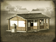
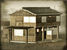

Requires
- Buildings: 
Enables
- Buildings: 
Basic Building Statistics (can be modified by difficulty level, arts, skills, traits and retainers)
- Cost: 2600
- +600 to wealth generated by trade in this province
- +2 to happiness in this province
- Enables recruitment of Rank 1 geisha
- +1 per turn to town growth from trade within this province
Clan Effects
- -1 to modernisation (clan development)
Description
"Bet now! Bet now! Betting ends!"
A gambling den is a sink of vice and depravity, and also something that brings enormous enjoyment to those who frequent it. The local people are often happy, if only because the gamblers will protect them from other, worse types. The den also improves the local economy, even if the ruling classes see very little of this activity, at least officially. Geishas also polish their skills here, improving the quality of agents recruited in the same province. Criminality covered a number of social classes in Shogunate Japan, lumping people together as slightly unacceptable based on their jobs. Not quite the lowest of the low, bakuto were gamblers. They were held in contempt because they did not earn an honest living. Above them were hinin, criminals such as actors and entertainers; again, they did not have respectable trades. Even ordinary townsfolk, the chonin, were held to be less than respectable compared to the peasants, simply because they did not labour on the land.